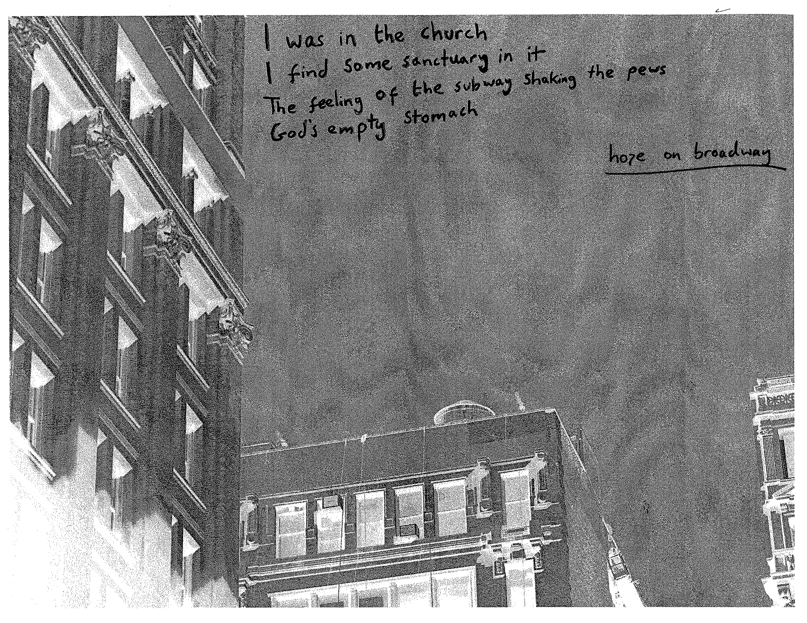
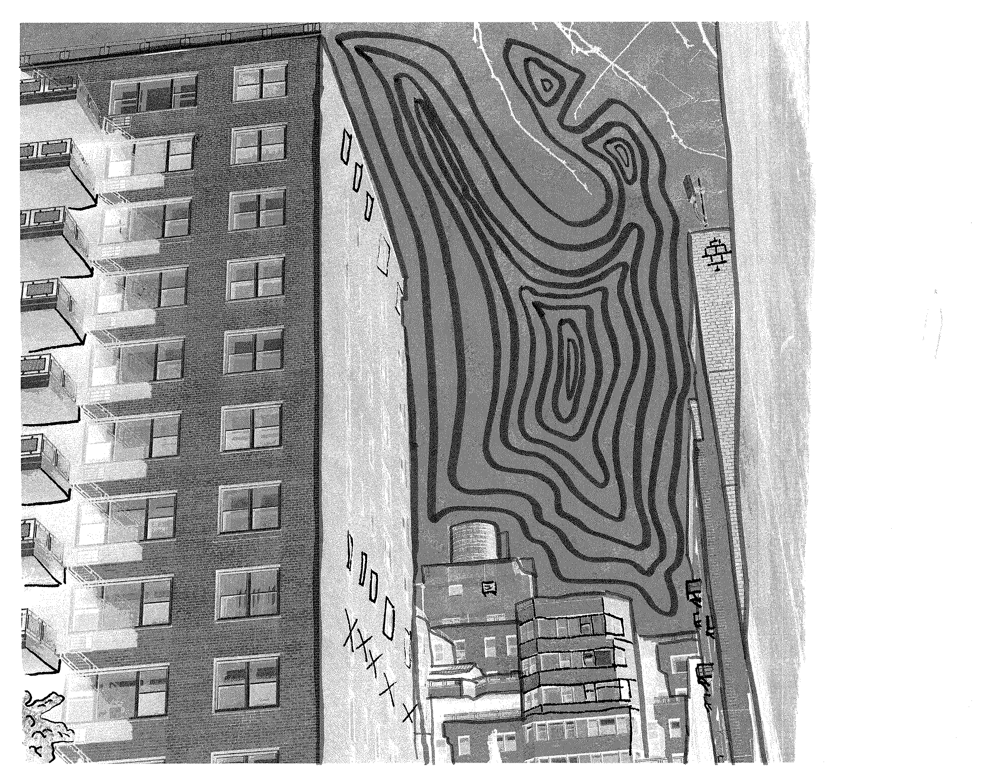
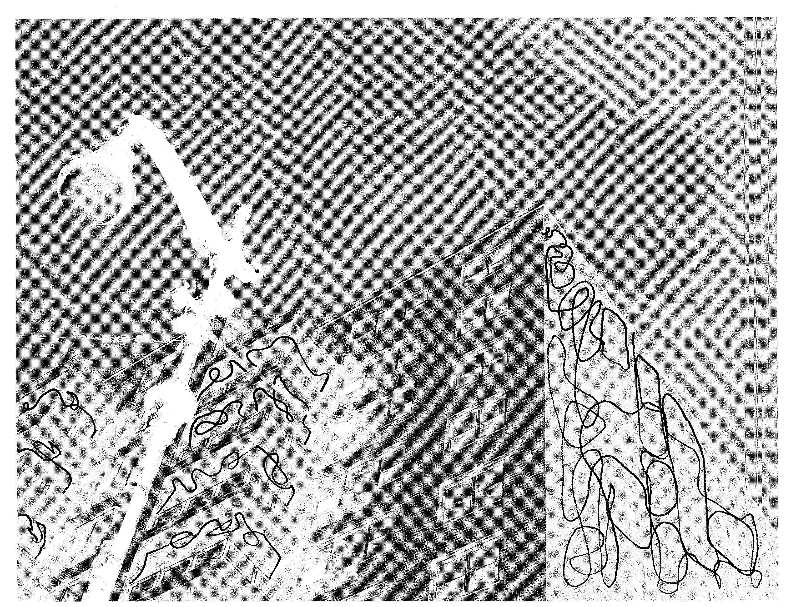
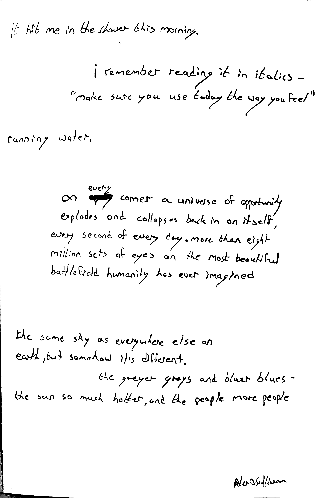

Cities & Memory
by ten-ninety
L Train / Czechia Pause (Krymska) / M Train
available now on Bandcamp. streaming release on Friday May 10th.



all above poems, music, photography, artwork by Matthew Xavier Corrigan
below poem by Peter O'Sullivan
